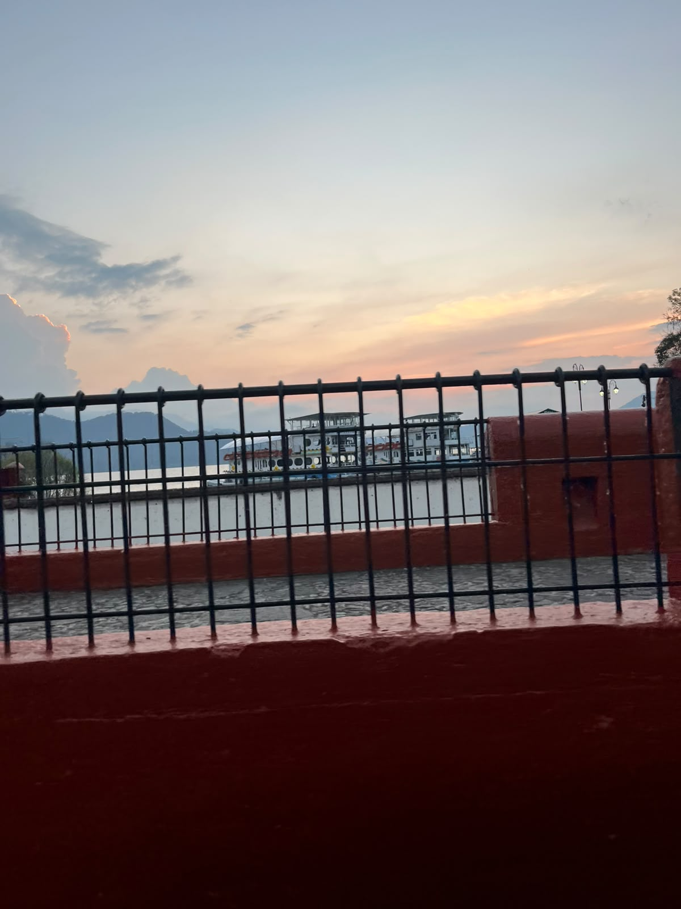
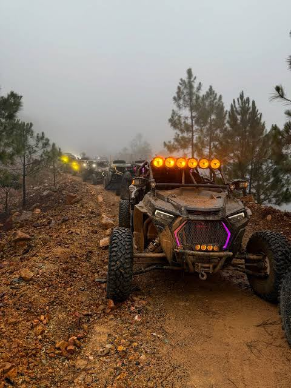
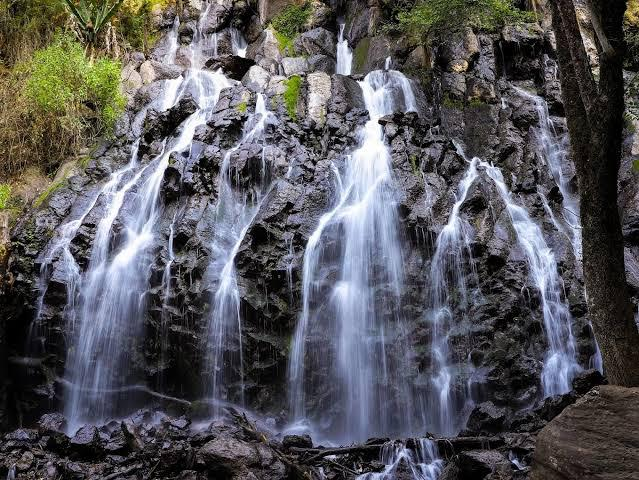

<!DOCTYPE html>
<html lang="es">
<html>
   
        <head>
    <TITLE>WEBSITE CECYMAGIC Alex_rz</TITLE>
    <link rel="icon" href="Logowebsite.jpeg" type="image/jpeg">
  </head>
</html>

<head>
    <meta charset="UTF-8">
    <meta name="viewport" content="width=device-width, initial-scale=1.0">
    <title>WEBSITE CECyMagic </title>
    <link href="https://cdn.jsdelivr.net/npm/bootstrap@5.3.3/dist/css/bootstrap.min.css" rel="stylesheet">

    <style>
    .card-img-top{
        height: 700px;
        object-fit: cover;
    }
     .card{
        height: 100%;
     }

   h1{
      color: rgb(99, 45, 25);
      font-family:cursive;
   }

    p{
      color: rgb(117, 9, 9);
      text-align:justify;
      font-family: Cambria, Cochin, Georgia, Times, 'Times New Roman', serif;
   }
   

    </style> 
</head>
 
<body>
        <div class="container text-center my-5">
        <h1>RIQUEZA DE VALLE DE BRAVO</h1>
        <h4 style="color: rgba(21, 87, 18, 0.641);"> ¡LA RIQUEZA NATURAL NO SE MIDE EN DINERO, SINO EN VIDA!</h4>
        </div>

        <div class="container my-5">
        <div class="row g-4">

        <div class="col-md-4">
        <div class="card h-100 shadow">
          
          
           
        <div class="card-body text-center">
            <h5 class="card-title">
            LAGUNA VALLE DE BRAVO </h5>
            <p class="card-text">
            La laguna de Valle de Bravo, también conocida como Presa Miguel Alemán, es el corazón turístico del Pueblo Mágico y uno de los principales destinos deportivos del Estado de México. Aquí se practican vela, kayak, paddle board, esquí acuático y parapente, convirtiéndolo en un lugar perfecto para combinar aventura y naturaleza.</p>
           <p class="card-text">
                ACTIVIDADES DEPORTIVAS: Valle de Bravo es considerado la capital de la vela en México. Los fines de semana se pueden ver decenas de veleros en el lago, y también se ofrecen opciones de esquí acuático, wakeboard, kayak y stand up paddle. El embarcadero municipal permite rentar embarcaciones y tablas para disfrutar del agua </p>
            
                
        </div>
        </div>
        </div>

        <div class="col-md-4">
        <div class="card h-100 shadow">
          
           
        <div class="card-body text-center">
            <h5 class="card-title">
            RUTA RZR AVANDARO</h5>
            <p class="card-text">
            La ruta de RZR en Avándaro es una experiencia turística que combina aventura y naturaleza en el corazón de Valle de Bravo. Los recorridos en estos vehículos todo terreno permiten explorar senderos rodeados de bosques, montañas y miradores espectaculares, donde el aire fresco y el paisaje verde crean un ambiente ideal para quienes buscan adrenalina y contacto directo con la naturaleza. Durante el trayecto, los visitantes pueden disfrutar de vistas panorámicas del lago y descubrir rincones poco accesibles a pie, lo que convierte la ruta en una experiencia única y emocionante.</p>
           <p class="card-text">
             Además de la aventura, la ruta de RZR en Avándaro ofrece la oportunidad de conectar con la cultura local y la tranquilidad del entorno. Muchos recorridos incluyen paradas en puntos estratégicos para descansar, tomar fotografías y apreciar la belleza natural de la región. Es una actividad perfecta para grupos de amigos, familias o parejas que desean vivir una jornada diferente, llena de diversión y paisajes inolvidables, en uno de los destinos más atractivos del Estado de México. </p>
            
             
        </div>
        </div>
        </div>

        <div class="col-md-4">
        <div class="card h-100 shadow">
          
           
        <div class="card-body text-center">
            <h5 class="card-title">
             VELO DE NOVIA AVANDARO </h5>
            <p class="card-text">
              El Velo de Novia en Avándaro es una de las cascadas más emblemáticas de Valle de Bravo y un atractivo turístico imperdible para quienes visitan la región. Rodeada de un entorno boscoso, esta caída de agua de más de 35 metros de altura sorprende por su belleza y frescura, creando un ambiente ideal para relajarse y disfrutar de la naturaleza. El sonido del agua al caer y la bruma que se forma alrededor transmiten una sensación de paz que invita a desconectarse de la rutina y conectar con el entorno natural.</p>
           <p class="card-text">
             Además de admirar la cascada, el lugar ofrece senderos para caminar y espacios perfectos para tomar fotografías memorables. Es un sitio muy visitado por familias, parejas y grupos de amigos que buscan un plan tranquilo pero lleno de encanto. La cercanía con Avándaro y Valle de Bravo lo convierte en una parada accesible y muy recomendable dentro de cualquier recorrido turístico por la zona, siendo un símbolo de la riqueza natural que caracteriza al Estado de México.  </p>
            
          
        </div>
        </div>
        </div>

        </div>
        </div>
   <a href="index.html"> REGRESAR </a>

      </body>
</html>
    
